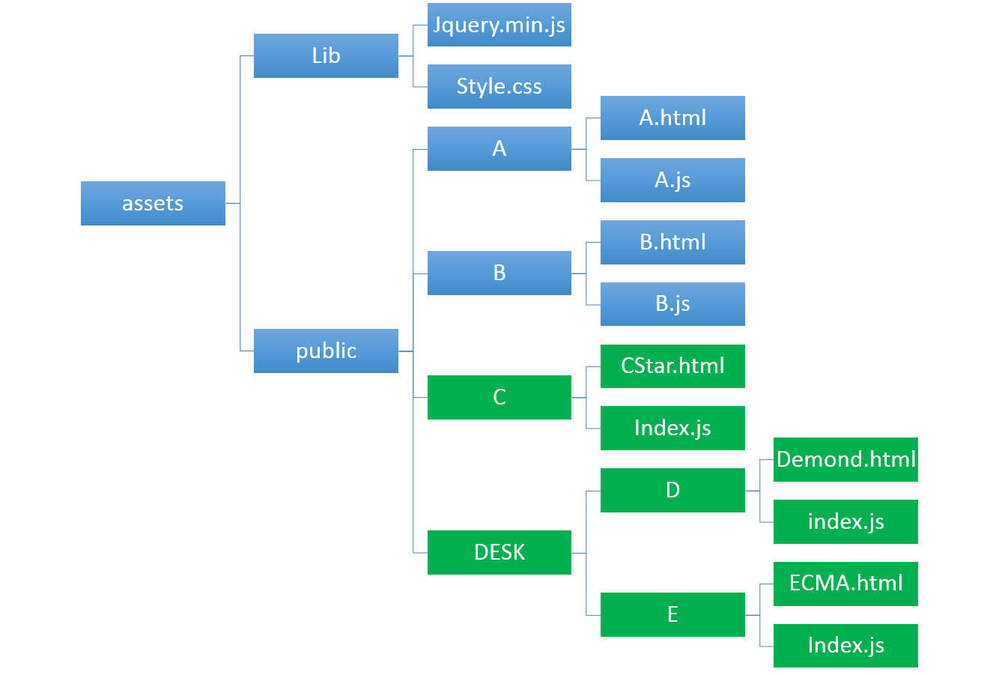
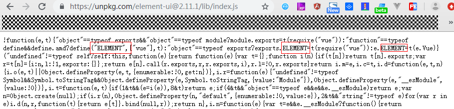
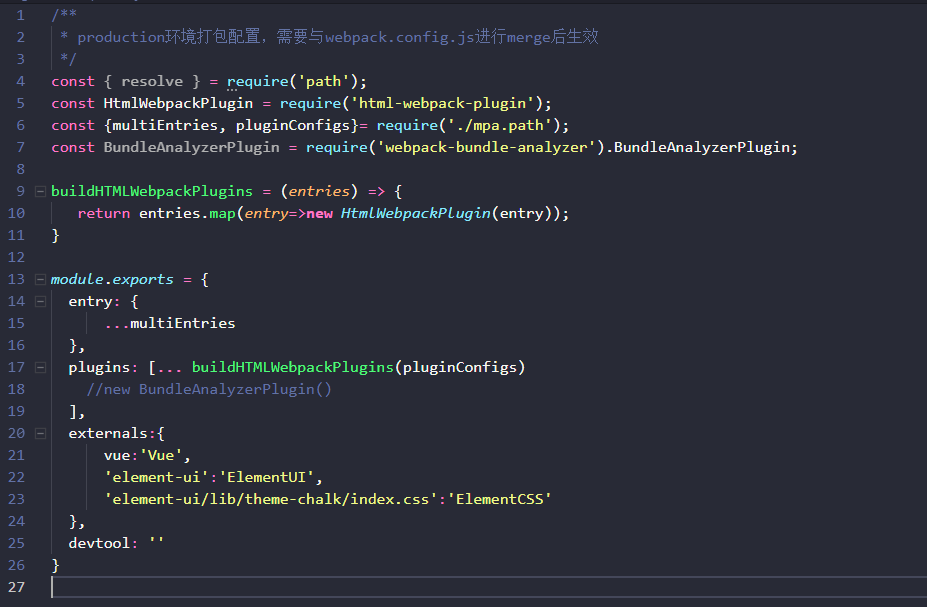

示例代码托管在：http://www.github.com/dashnowords/blogs
博客园地址：《大史住在大前端》原创博文目录
华为云社区地址：【你要的前端打怪升级指南】
为另一个项目提供可嵌入的功能单页，大部分页面使用时都是独立功能页，个别页面带有左侧边栏（相当于3-4个页面的整合形态），由于资源定位地址的限定，每个页面打包为单页后，入口html文件需要定制命名，且脚本和样式文件需要放在指定的路径下，公共资源地址也必须替换成特殊字符以适配母系统的调用逻辑（比如下面结构中应用jquery.min.js的路径可能是{{publicRoot}}/{{publicLib}}/jquery.minjs）。假设原工程中拥有AB这2个旧页面，现在需要开发CDE这3个页面，目录结构要求如下：

蓝色部分为旧资源，绿色部分为新开发需求。
原方案采用Vue+ElementUI进行开发，构建过程基本是零配置的，开发效率非常高，页面风格也统一，但零配置的构建过程只能生成SPA模式的应用，所以原方案的做法是：
将构建过程中需要定制的量提取到config.js文件中进行统一管理，大致形式如下：
//config.js
module.exports = {
A:{
publicPath:'{{publicRoot}}/{{publicLib}}'
prodFileName:'A.html',
entryKey:'public/A',
entryPath:'public/A/A.js'
},
B:{
//...
}
//...
}开发过程中使用统一的路由文件router.js，打包过程中在main.js中引用对应页面的XX.router.spa.js作为路由，而将其他页面注释掉，打包时传入命令行参数--key=XXX,key值在打包脚本中被解析后从config.js中取出打包需要的设置参数，然后将目标页面打包为独立页面，其他页面虽然也在工程中，但并不参与打包。
// 入口文件src/main.js
import router from './pages/C/router.spa';
//import router from './pages/D/router.spa';
//import router from './pages/E/router.spa';上述打包过程在使用中出现了很多问题：
vue和ElementUI会被打包进每一个单页面，使得每个打包出的index.js几乎有1.2MB大小，这种空间浪费是没必要的。main.js中会有很多独立路由，如果开发中进行了跨页面修改，很可能在main.js中激活的路由为C页面路由时，打包时--key参数的值却传成了D，这种情况并不会引起报错，但事实上构建结果确实错误的。main.js没有变化，所以在不同页面打包时，结果都输出在dist目录下，需要手动与母工程中的地址去匹配，操作繁琐。上面的问题实际上都是因为原方案将一个多页面开发需求按照单页面应用来实现而造成的，需要对自动化构建工程进行一些定制。
1.分离webpack配置
本例中开发环境和最终打包的主要差异在于路由上，开发中由于可能需要进行跨页面开发，可以使用单入口和独立路由，而进行生产环境构建时则需要输出多页面应用，所以首先要做的就是将原本的webpack.config.js文件拆分为webpack.base.js,webpack.dev.js,webpack.prod.js三个文件，webpack.base.js为环境无差别的配置，然后依据构建模式的不同，使用webpack-merge插件将环境相关的配置与基本配置进行合并：
/*webpack.base.js示例*/
const argv = require('yargs-parser')(process.argv.slice(2));
const env_short = argv.env.all ? 'all' : argv.p ? 'prod':'dev';
const webpackConfig = require(`./config/webpack.${env_short}`);//根据-p属性加载webpack的dev配置或prod配置
const merge = require('webpack-merge');
//基本配置
const baseConfig = {
//....
}
//输出合并后的配置
module.exports = merge(baseConfig, webpackConfig);webpack.dev.js保持原本的SPA开发的设置即可满足需求。
2. 抽离外部引用
本例中较大的外部应用是vue和ElementUI，很多开发者一直使用自动化脚手架工具，并没有意识到这两个库作为外部依赖该如何引入工程。公共库的抽离需要在webpack配置中将其填写在external配置项中:
module.exports = {
//...
externals:{
vue:'Vue',
'element-ui':'ELEMENT'
},
//...
}key为引用的模块名,value为这个模块引入后对应的全局命名，external配置项的含义是：请不要将这个模块注入编译后的JS文件里，对于源代码里出现的任何import/require这个模块的语句，请将它保留并根据模块化标准进行依赖方式适配 。
Tips:
Vue做为外部依赖时有很多构建包，本例中因为使用webpack进行了构建，没有在线编译模板的需求，所以不需要引入完整的Vue,而只需要引入压缩后的只包含运行时的版本vue.runtime.min.js即可。- 外部引入库时需要注意命名，比如上例中的ELEMENT，开发者通常会填写为自己在代码中使用的ElementUI而引起报错，当不确定名称时，有个简单的办法就是找一个CDN的资源看一下，通常代码最开始都是
UMD规范的固定结构，很容易看到关键词(如下图所示)。

然后将资源的CDN地址或是本地公共库地址加入到index.html中，你可以使用模板语法，然后从html-webpack-plugin插件实例化时传入定制参数:
<!--html文件模板-->
<body>
<div id="app"></div>
<script src="<%= htmlWebpackPlugin.options.vue_path %>"></script>
<script src="<%= htmlWebpackPlugin.options.elementUI_path %>"></script>
<script src="<%= htmlWebpackPlugin.options.tpl_entryPath %>/index.js"></script>
</body>//webpack.prod.js
module.exports = {
//...
plugins: [
new HtmlWebpackPlugin({
template: 'src/index.html',//生成index.html时依据的模板
filename: '.....',
inject:false,
tpl_entryPath:'....',
vue_path:'.....',
elementUI_path:'.....',
}),
//new BundleAnalyzerPlugin()
],
}最终打包后生成的index.html文件大致如下：
<body>
<div id="app"></div>
<script src="{{publicRoot}}/{{publicLib}}/vue.min.js"></script>
<script src="{{publicRoot}}/{{publicLib}}/element-ui.js"></script>
<script src="public/A/A.js"></script>
</body>如果第三方库从本地加载，则需要将/node_modules/element-ui/lib/index.js和/node_modules/vue/dist/vue.runtime.min.js两个依赖文件拷贝到lib文件夹中的对应地址，这样访问index.html时就可以以外部依赖的形式将其加载进来。样式文件的剥离直接使用插件完成即可，webpack4以前的版本使用extract-text-webpack-plugin,从4.0版本后统一使用mini-css-extract-plugin。
3. 为webpack定制多入口
多入口的配置是多页面应用打包的关键，由于打包结果存在嵌套目录，所以需要对entry对象的键值进行一些定制，打包后的路径信息是直接通过key值来定制的，同时需要实例化多个HtmlWebpackPlugin来为每一个入口文件生成一个对应的index.html访问入口，定制参数可以在实例化时传入：
//webpack.prod.js
module.exports = {
entry:{
'C/index':'./src/pages/C/C.entry.js',
'DESK/D/index':'./src/pages/D/D.entry.js',
'DESK/E/index':'./src/pages/E/E.entry.js'
}
//...
plugins:[
new HtmlWebpackPlugin({...paramsC}),
new HtmlWebpackPlugin({...paramsD}),
new HtmlWebpackPlugin({...paramsE}),
]
}当然你可以将entry或plugins数组的组装过程剥离到其他文件中，然后直接引用：

当然，每个页面的入口文件X.entry.js相当于旧方案中main.js文件中移除被注释掉的未启用路由信息后剩余的部分，它足以支撑每个单页独立被访问。
经上述改造后，在dist目录中输出的结构和需求中public目录下的结构就保持一致了，而且每个页面的index.js文件也缩小到了100K左右。当然你也可以使用node.js去编写一些自动化脚本，将后续的替换过程也自动化，或者继续对webpack的打包过程进行优化，本文就不再赘述了。